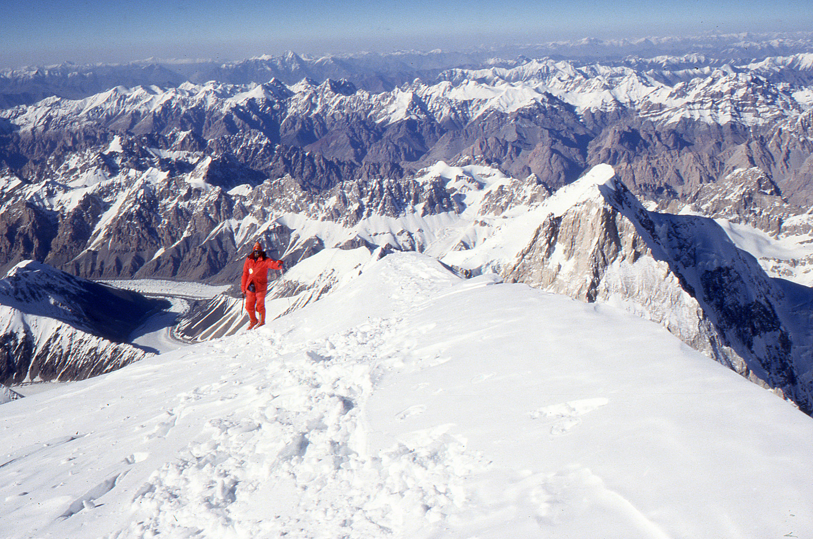
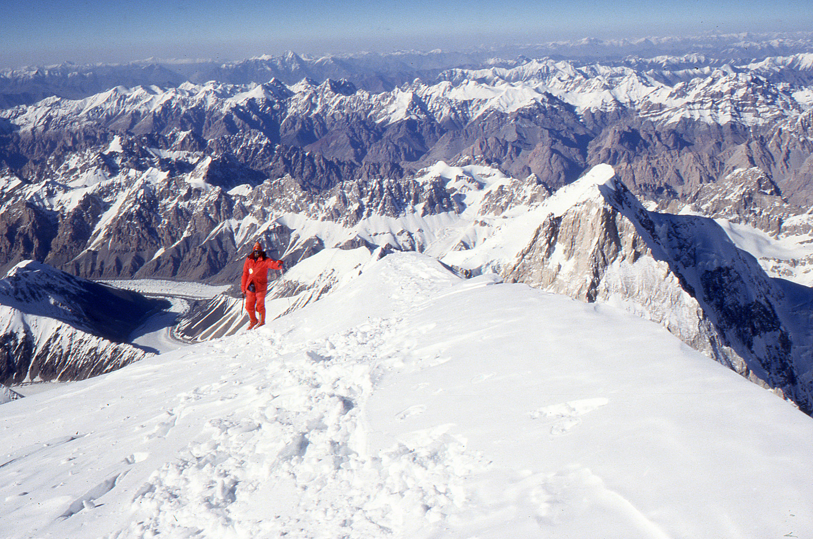

About K2
K2, also known as Chhogori in Pakistan and Qogir in China, is the second highest mountain in the world, reaching a height of 28,251 feet (8,611 meters). It is located in the Karakoram mountain range, on the border of Pakistan and China. Like Mount Everest, K2 is a popular destination for mountaineers and adventurers, and is known for its challenging and dangerous climbing conditions.
The first attempt to summit K2 took place in 1902, but it was not until 1954 that the mountain was successfully climbed. Since then, numerous expeditions have attempted to reach the summit, but K2 remains one of the most difficult and deadliest mountains in the world. Each year, a small number of climbers are able to reach the top, but many have lost their lives trying. Despite its challenges, K2 continues to attract the most skilled and experienced mountaineers from around the globe.